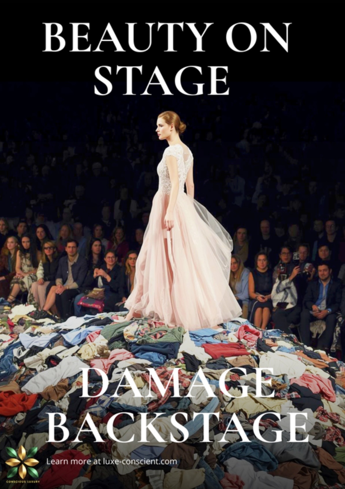
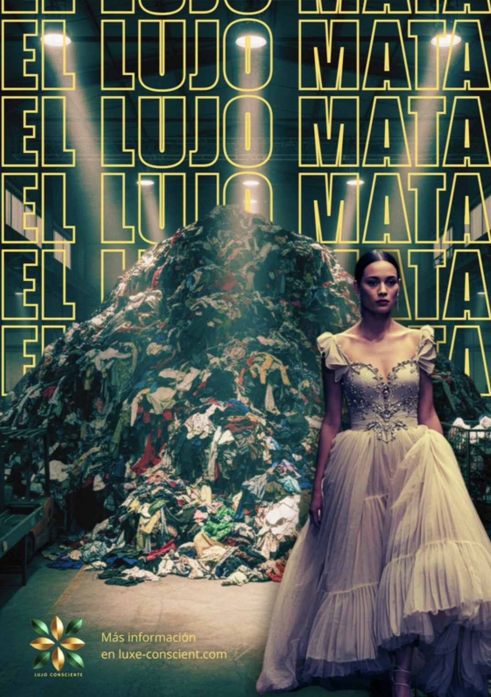
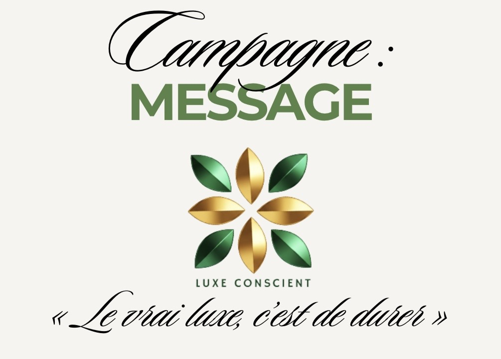

Mes projets préférés
Projet Photographies
Dans ce cours de photographie avec notre professeur Stéphane Caro, j’ai appris à utiliser différentes techniques d’éclairage et de mise en scène afin de comprendre l’impact de la lumière sur une photo.
La séance s’est déroulée sur le plateau TV de l’IUT, équipé comme un véritable studio photo professionnel. J’ai pu voir plusieurs styles d'éclairages photos (clair-obscur, high key, low key) et différents angles d’éclairage.
J’ai également appris à installer le matériel, régler l’appareil photo et retoucher les images sur Photoshop, notamment pour la réalisation d’une publicité pour une publicité de parfum.

Campagne “Luxe conscient”



Notre projet avec les filières de PUB et de COMORG consistait à créer une campagne de sensibilisation sur la face cachée des défilés de mode.
Nous avons réalisé des affiches en anglais et en espagnol ainsi qu’une vidéo. L’objectif était de créer un label de luxe responsable afin de montrer que le luxe à aussi des mauvais côtés.
Notre message final était : "Le vrai luxe, c’est de durer", mettant en avant une vision plus durable de la mode et plus particulièrement du luxe.
Publicité Doritos
En groupe avec Mélanie, Alina et Lysa, nous avons réalisé une publicité pour la marque Doritos.
Nous avons imaginé le scénario, organisé les scènes et tourné différentes prises afin de créer une vidéo qui corresponde à la marque Doritos.
Ce projet m’a permis de développer ma créativité, mon travail en équipe et mes compétences en montage vidéo.